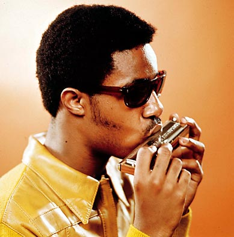
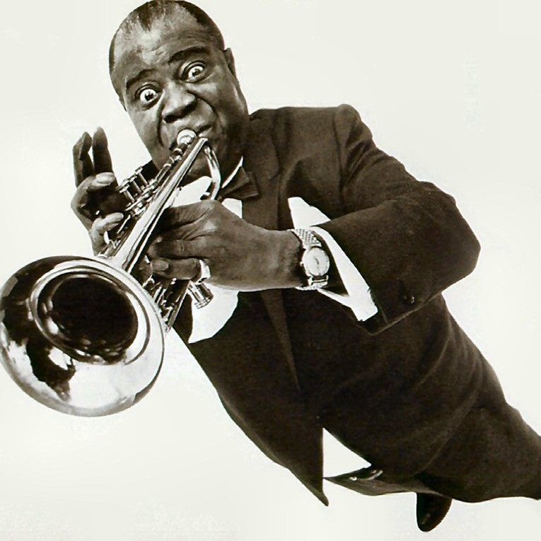
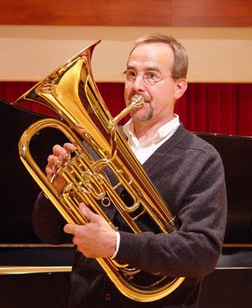
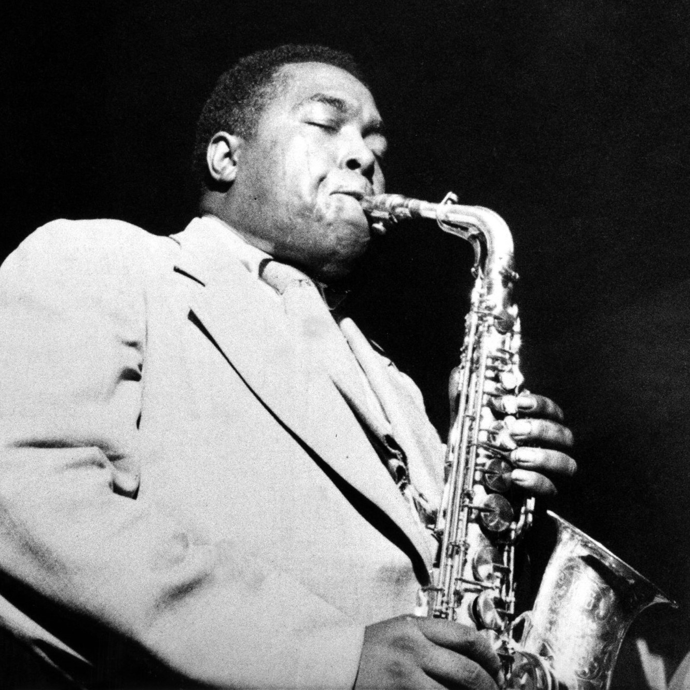
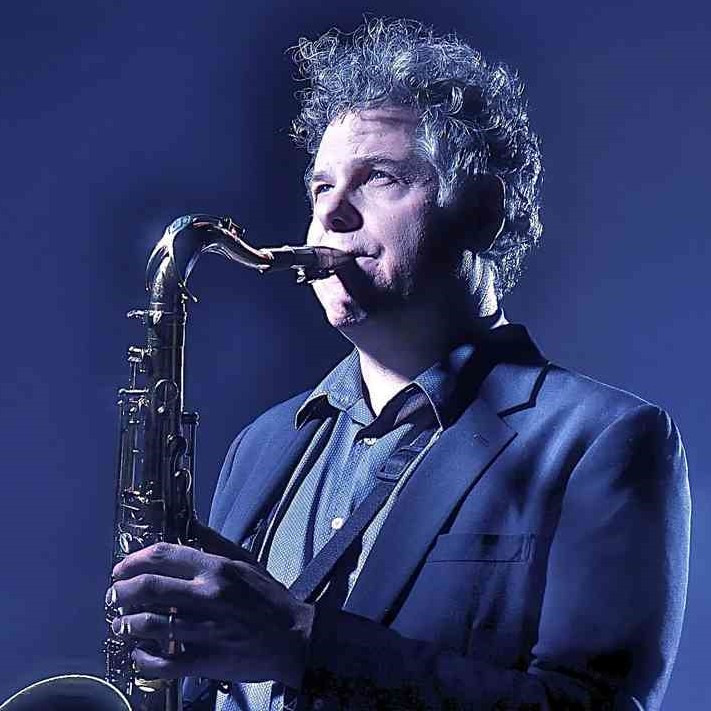
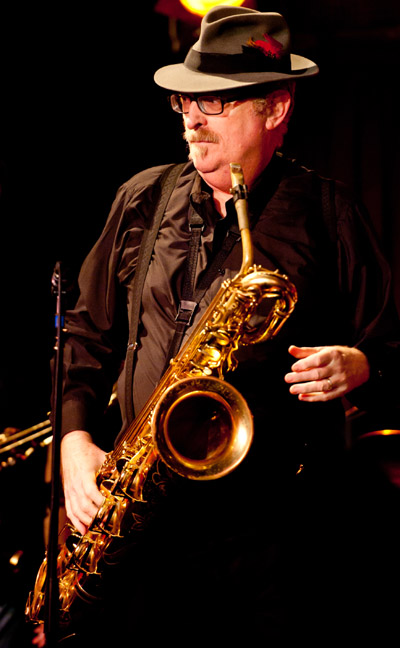
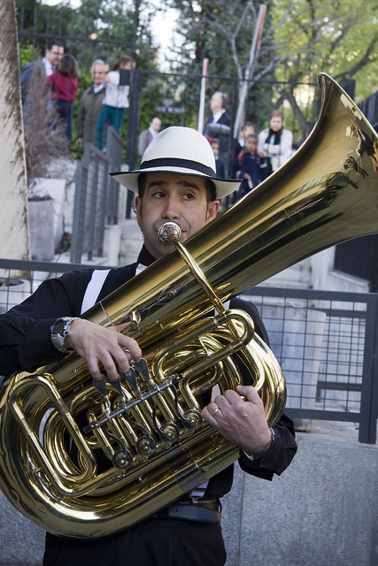
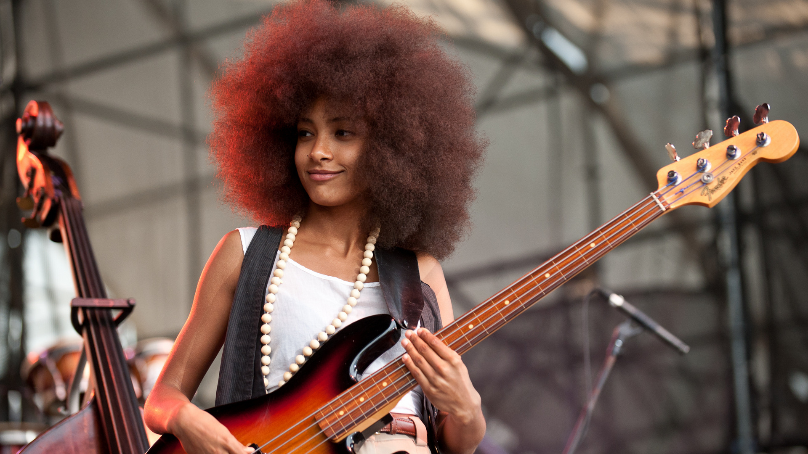

Instruments I've played
- Harmonica 
- Trumpet 
- Baritone Horn 
- Alto Sax 
- Tenor Sax 
- Baritone Sax 
- Tuba 
- Bass Guitar 
I started playing Harmonica when I was around 8 years old. I was tired of playing the Recorder and my parents didn't want to spend a whole lot of money on an instrument. They got me a Hohner Blues Bender and I quickly learned songs like "Mary had a Little Lamb" and "When the Saints go Marching In". My parents were impressed with how fast I picked up Harmonica and felt I would take music seriously in the future. A year later I would get my first "real" instrument.
I started playing Trumpet in 4th grade when our school allowed us to pick "real" instruments to play. I think I chose Trumpet because my dad played alot of Miles Davis when I was in the womb and it just sounds super cool when you play. I stuck with playing Trumpet all the way up until my junior year of High School. I played in my schools' Concert Band, Pep Band, and Jazz Band from Middle School to high School.
When I got to Middle School in the 7th grade our band had too many Trumpet players, so our Teacher asked if anyone would be willing to switch to another instrument. I've always been a team player so I volunteered. The instrument that caught my eye was the Baritone Horn. It looks like a mini Tuba and sounds like a cross between a Trumpet and Trombone. I played the Baritone in the school's Concert Band for all of 7th and 8th grade.